この手順はKTL Learn Advance「Excel VBA入門」にて使用するハンズオン手順です。
この手順は公開しますので復習や展開し自由に使って頂いて構いません。
- 新規Excelブックを作成
- 「ファイル」→「名前を付けて保存」を選択
- 好きな場所に「テストアプリ.xlsm」と保存
※このとき、必ず「ファイルの種類」を「Excelマクロ有効ブック(*.xlsm)」にすること

- 「ファイル」→「オプション」を選択
- 「リボンのユーザー設定」→「開発」にチェック
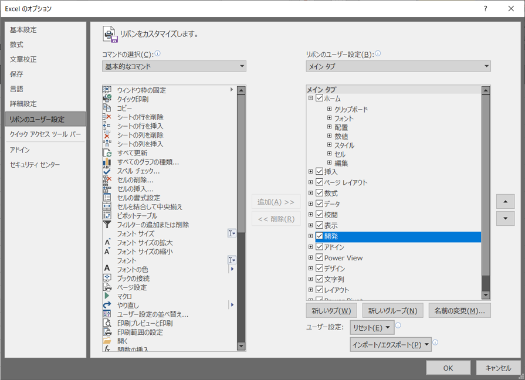
- 「OK」を選択
- タブに「開発」と表示されていることを確認する
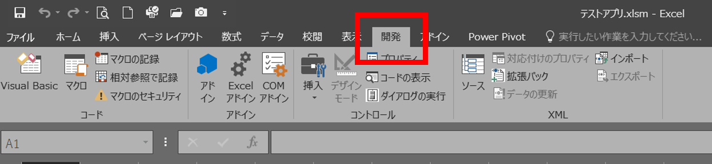
- 「開発」タブを開く
- 「Visual Basic」を選択し、VBE(Visual Basic Editor)を開く
- 「ツール」→「オプション」を開く
- 「編集」タブ内(最初から開かれているタブ)の「変数の宣言を強制する」にチェックを入れる
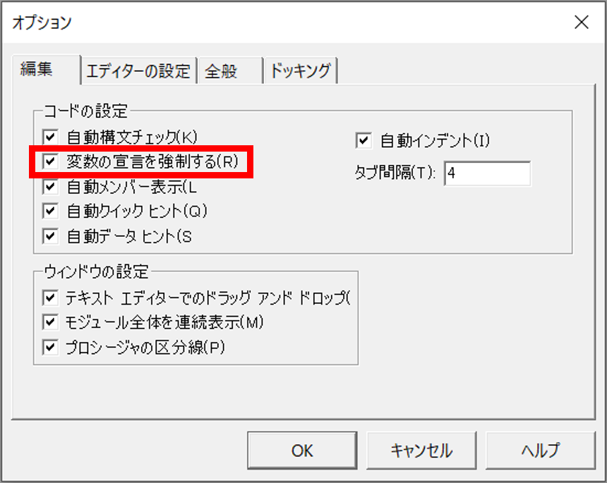
- 「OK」を選択
- VBEの画面左上の領域(「プロジェクトウィンドウ」という)上で右クリック→「挿入」→「標準モジュール」と選択
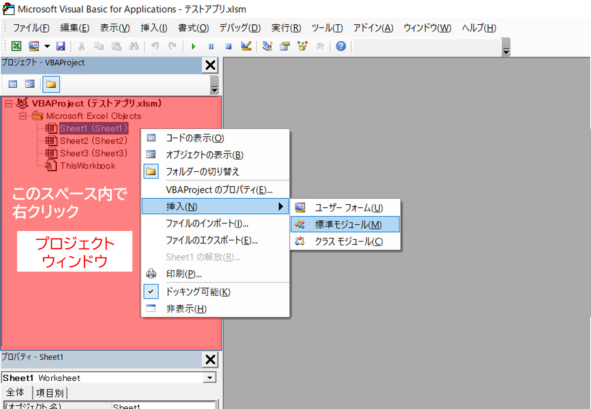
- 画面右側の入力用のウィンドウ(コードウィンドウ)の一番最初に「Option Explicit」と書かれていれば初期設定は完了
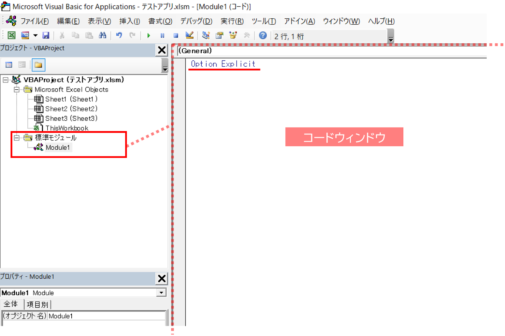
- コードウィンドウの
Option Explicitの次の行にsub Testと入力し、Enterキーを押下する - すると自動的に
subがSubと変換され、Testの後ろに()が追記される。また、End Subと表示される
Sub Test()以下を次のように記述する
Sub Test() MsgBox "これはテストです" End Sub
- 作成したプログラムを実行し動作を確認するため、
Sub Test()とEnd Subの間のどこかをクリックしカーソルを置く F5キーを押下する- 画面に「これはテストです」というメッセージボックスが表示されたことを確認し、「OK」ボタンを押下する
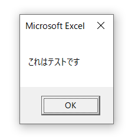
様々な動かし方を試してみる ①ステップイン
- 先ほど作成したコードを以下のように書き換える
Sub Test() Dim testString as String testString = "これはテストです。実施日時は" & Now() & "です" MsgBox testString End Sub
- 4と同様に、カーソルを
Subプロシージャ内に置き、F8キーを押下する Sub Test()が黄色くハイライトされる
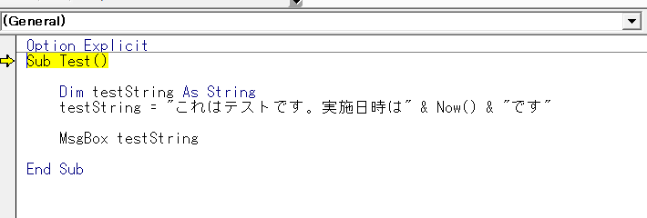
- 再度
F8キーを押下すると、testString = ..."の行にハイライトが移動する - 更に
F8キーを押下すると、MsgBox testStringの行にハイライトが移動する。このときtestStringにカーソルを合わせると、testStringの内容を確認することができる。 - もう一度
F8キーを押下すると、メッセージボックスが表示される
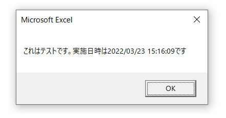
- メッセージボックスの「OK」を押下すると、
End Subの行がハイライトされている。更にF8キーを押下するとハイライトが消える
様々な動かし方を試してみる ②ブレイクポイント
MsgBox (testString)の行にカーソルを置き、F9キーを押下する- すると、カーソルを置いた業が褐色にハイライトされる
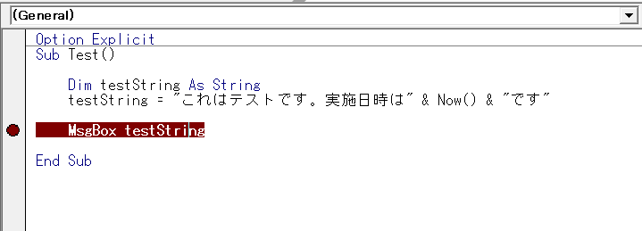
F5キーを押下する- 褐色にハイライトされた行が黄色くハイライトされる
- もう一度
F5キーを押下するとメッセージボックスが表示される - メッセージボックスの「OK」を押下すると、黄色いハイライトは消える
- 「ハンズオン用資材」のフォルダ配下は以下のとおり
・PDFフォルダ ... プログラム実行により作成されたPDFファイルを格納 ・差込印刷アプリ(完成版).xlsm ... ハンズオンの完成物の見本 ・差込印刷アプリ.xlsm ... ハンズオン用ファイル(プログラム部分は空)
- 「差込印刷アプリ(完成版).xlsm」を開く
- 「納入通知書」「差し込みリスト」の2シートがある
今回のプログラムでは「差し込みリスト」のK列「引抜」セルが空欄の行の対象者の情報を「納入通知書」シートに転記しPDF化又は印刷する。なお「納入通知書」シートの差込箇所にあたる部分は便宜上褐色に色付けしている - 「納入通知書」シート上「印刷」ボタンを選択
- 暫く待つと「差し込み完了しました」というメッセージボックスが表示される
- 「OK」押下後、PDFフォルダを確認すると2つのPDFファイルが出力されていることが確認できる
- 「差込印刷アプリ(完成版).xlsm」に戻り
Alt+F11キーでVBEを開くと完成版のコードとコメントを確認できる
- 「差込印刷アプリ(完成版).xlsm」を閉じる
タイトル行の項目名の変数化
- 「差込印刷アプリ.xlsm」を開き、
Alt+F11キーでVBEを開く - VBEのプロジェクトウィンドウ上で右クリック→「挿入」→「標準モジュール」と選択
Option Explicitの下に以下のように記述する
Option Explicit Private Enum HEADER No = 1 郵便番号 住所 氏名 発行日 納入対象年 納入対象月 手数料A 手数料B 納入期日 引抜 End Enum
繰り返し処理
- 次に以下のように記述する
Public Sub 差し込み印刷()
Dim lr As ListRow
For Each lr In 差し込みリスト.ListObjects("T_差し込みリスト").ListRows
MsgBox "今は" & lr.Index & "行目を処理中"
Next lr
Msgbox "差し込み完了しました"
End Sub
動作確認
- 「差し込み印刷」プロシージャ内をクリックしてカーソルを置き、F5キーを押下
- 「今は1行目を処理中」と表示される。「OK」ボタンまたはEnterキーを押下すると次は「今は2行目を処理中」と表示される。これを合計7回(nの部分が1〜7まで増えていきながら)表示された後「差し込み完了しました」と表示され処理が終了する
条件分岐(If文)
- 差し込み印刷プロシージャーの
For Each文内を以下のように書き換える
Public Sub 差し込み印刷()
Dim lr As ListRow
For Each lr In ThisWorkbook.Worksheets("差し込みリスト").ListObjects("T_差し込みリスト").ListRows
If lr.Range(引抜).Value = "" Then
MsgBox "今は" & lr.Index & "行目を処理中"
End If
Next lr
Msgbox "差し込み完了しました"
End Sub
動作確認
- 「差し込み印刷」プロシージャ内をクリックしてカーソルを置き、
F5キーを押下 - 「今は1行目を処理中」と表示される。「OK」ボタンまたは
Enterキーを押下すると次は「今は2行目を処理中」と表示された後「差し込み完了しました」と表示され処理が終了する
IF文補足
条件分岐の書き方は他にもあります。ここではその一例を紹介します。
‘他の条件が存在する または その条件のどれにも当てはまらない場合の書き方 If x > 1 then MsgBox "xは1より大きい" Else If x > 10 then MsgBox "xは10より大きい" Else MsgBox "xは1より小さい" End If ‘Not演算子を使った書き方 If not x > 1 then ‘もしxが1より大きくない場合 ‘複数の条件を満たす必要がある場合の書き方 If x > 1 And y > 10 then ‘もしxは1以上、yは10以上の場合 ‘条件が一通りのみの場合は一行でその後の処理まで書ける If x > 1 then MsgBox "xは1より大きい"
納入通知書への転記処理を追加する
- 納入通知書への情報の転記処理を追加するため、以下の記述を差し込み印刷プロシージャの下に追記する
Private Sub 納入通知書転記(ByRef list_row As ListRow)
納入通知書.Range("No").Value = list_row.Range(No).Value
納入通知書.Range("郵便番号").Value = list_row.Range(郵便番号).Value
納入通知書.Range("住所").Value = list_row.Range(住所).Value
納入通知書.Range("氏名1").Value = list_row.Range(氏名).Value & " 様"
納入通知書.Range("発行日").Value = list_row.Range(発行日).Value
納入通知書.Range("氏名2").Value = list_row.Range(氏名).Value & " 様"
納入通知書.Range("手数料A").Value = list_row.Range(手数料A).Value
納入通知書.Range("手数料B").Value = list_row.Range(手数料B).Value
納入通知書.Range("納入期日").Value = list_row.Range(納入期日).Value
Dim targetYear As Long
targetYear = list_row.Range(納入対象年).Value
Dim targetMonth As Long
targetYear = list_row.Range(納入対象月).Value
Dim script As String
script = "令和" & targetYear & "年" & targetMonth & "月分（1日～末日）の手数料として、同封の納入通知書により下記指定期日までに下記
の金額を納入されたい。"
納入通知書.Range("頭書き").Value = script
End Sub
- 「差し込み印刷」プロシージャから「納入通知書転記」プロシージャを呼び出すため、「差し込み印刷」プロシージャの
If文内を以下のとおり修正する
Public Sub 差し込み印刷()
Dim lr As ListRow
For Each lr In ThisWorkbook.Worksheets("差し込みリスト").ListObjects("T_差し込みリスト").ListRows
If lr.Range(引抜).Value = "" Then
Call 納入通知書転記(lr)
End If
Next lr
Msgbox "差し込み完了しました"
End Sub
動作確認
- 今回はステップインで一行ずつ処理を確認するので、「差し込み印刷」プロシージャ内をクリックしてカーソルを置き、
F8キーを押下 - 先ほど追記した
Call納入通知書転記(lr)の箇所にきた後、「納入通知書転記」プロシージャにハイライトが移動していることがわかる - 納入通知書転記
= Trueまで処理が進んだらExcelシートを確認 - 差し込みリストの最初の人の情報がExcelシートに転記されている
- 処理が終了するまで
F8を繰り返し押下する(F5で一気に終わらせてもよい)
出力処理を追加する
- PDF又は紙への出力処理を追加するため、「納入通知書転記」プロシージャの後に以下を追記
Private Sub 納入通知書出力(ByVal mode As String, ByRef list_row As ListRow)
Select Case mode
Case "PDF", "pdf", "P", "p"
Dim pdfName As String
pdfName = Format(list_row.Range(No).Value, "00") & "_納入通知書_" & list_row.Range(氏名).Value & ".pdf"
納入通知書.ExportAsFixedFormat Type:=xlTypePDF, Filename:=ThisWorkbook.Path & "\PDF\" & pdfName
Case Else
納入通知書.PrintOut preview:=True
End Select
End Sub
Select Case mode
Case 条件1, 条件2, 条件3..
(処理)
Case Else
(処理)
End Select
- 「差し込み印刷」プロシージャから「納入通知書出力」プロシージャを呼び出すため、「差し込み印刷」プロシージャのIf文内を以下のとおり修正する
Public Sub 差し込み印刷()
Dim lr As ListRow
For Each lr In ThisWorkbook.Worksheets("差し込みリスト").ListObjects("T_差し込みリスト").ListRows
If lr.Range(引抜).Value = "" Then
Call 納入通知書転記(lr)
Call 納入通知書出力("pdf", lr)
End If
Next lr
Msgbox "差し込み完了しました"
End Sub
動作確認
- 「PDF」フォルダの中身を全て削除する
- 「差し込み印刷」プロシージャ内をクリックしてカーソルを置き、
F5キーを押下 - 「差し込み完了しました」とのメッセージボックスの表示を確認後「PDF」フォルダを確認すると、「T_差し込みリスト」上引抜になっていない対象者の納入通知書が出力されていることが確認できる
ボタンからプログラムを起動できるようにする
- 「納入通知書」シート上の「印刷」ボタン(というか図形)上で右クリック→「マクロの登録」を選択
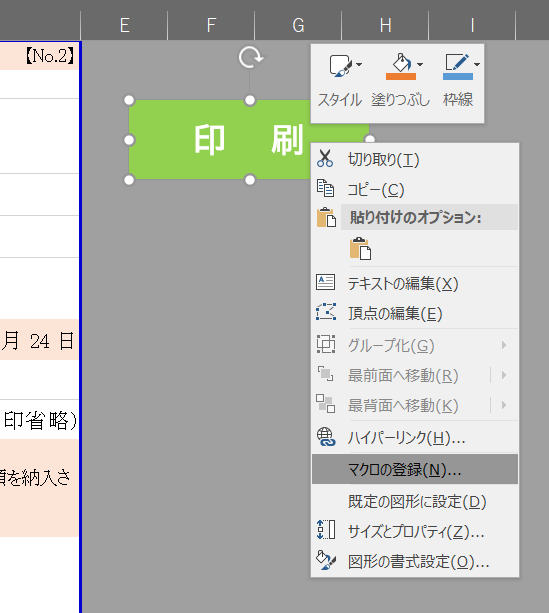
- 表示された画面で「差し込み印刷」を選択し、「OK」を押下
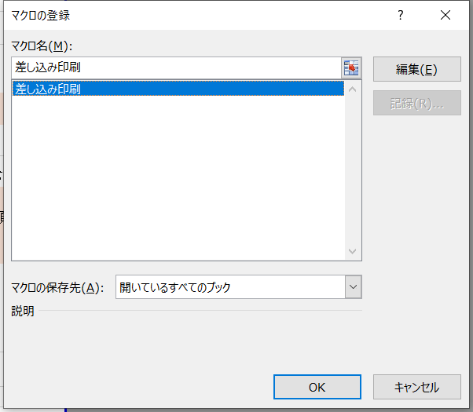
- 「印刷」ボタンを押すことで今回作成したプログラムが起動するようになる